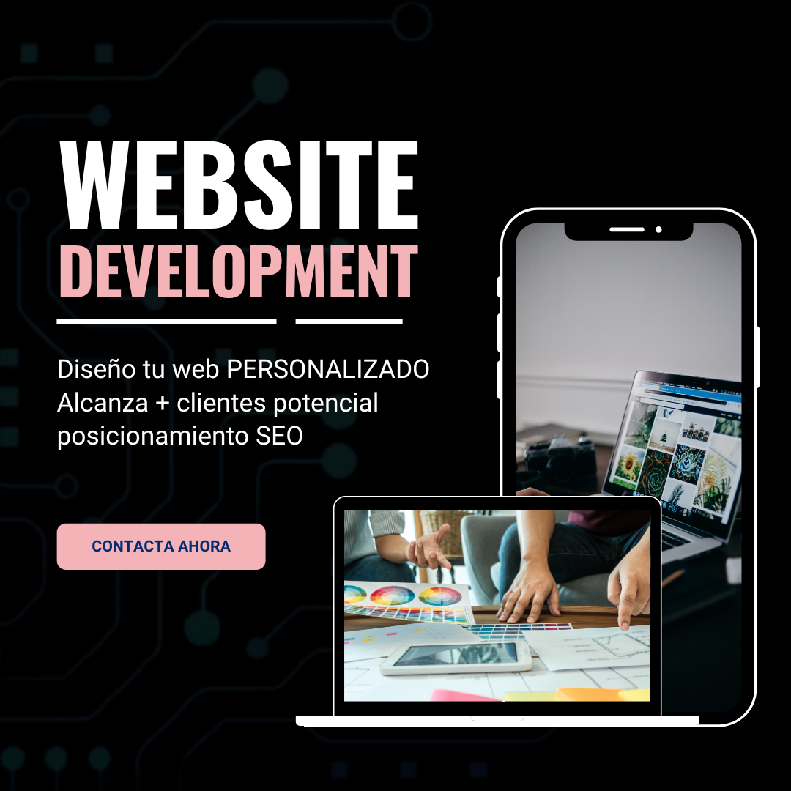

Desarrollo de sitios web basado en plantillas ya existentes
servicios especializados para optimizar y personalizar sitios web que ya están desarrollados a partir de plantillas, como las de plataformas populares (por ejemplo, WordPress, Wix, Squarespace). Si tu sitio actual necesita mejoras en el diseño, funcionalidad o rendimiento, puedo ayudarte a ajustar y mejorar tu sitio existente.
Características:
- Mejora del Diseño y Funcionalidad: Transformación de una plantilla básica en un sitio web que se destaca por su diseño y capacidades.
- Rendimiento Mejorado: Optimización que garantiza una experiencia de usuario rápida y fluida.
- Costo-Efectivo: Mejoras significativas sin la necesidad de desarrollar un sitio web desde cero.
- Personalización de Plantillas: Adaptación y modificación de plantillas existentes para alinearlas mejor con tu marca y objetivos específicos.
- Optimización de Rendimiento: Mejora del tiempo de carga y la eficiencia del sitio web mediante técnicas de optimización.
- Actualización de Contenidos: Revisión y ajuste del contenido para asegurar que sea relevante y efectivo.
- Mejora de Usabilidad: Ajustes en la navegación y la estructura del sitio para una experiencia de usuario más intuitiva.
- Mejora de Usabilidad: Ajustes en la navegación y la estructura del sitio para una experiencia de usuario más intuitiva.
- Optimización SEO: Implementación de estrategias avanzadas de SEO para aumentar la visibilidad en los motores de búsqueda.
- Soporte y Mantenimiento: Asistencia continua para solucionar problemas y mantener tu sitio web funcionando de manera óptima.
Beneficios:

Desarrollo web de sitios personalizados
desarrollo de sitios web completamente personalizados que se adaptan a las necesidades únicas de tu negocio. Desde la conceptualización hasta la implementación, mi servicio abarca todo el proceso para crear una presencia en línea que refleje fielmente tu marca y objetivos.
Caracteristicas
- Diseño Único: A diferencia de las plantillas genéricas, obtendrás un sitio web que refleja tu visión y necesidades específicas.
- Escalabilidad: Soluciones diseñadas para crecer junto con tu negocio.
- Experiencia del Usuario Mejorada: Un sitio web bien diseñado que mejora la experiencia de tus visitantes.
- Diseño a Medida: Creación de un diseño web único y adaptado a la identidad de tu marca.
- Desarrollo Frontend y Backend: Implementación de funcionalidades tanto en el lado del cliente (frontend) como en el servidor (backend).
- Optimización para Móviles: Diseño responsivo que asegura que tu sitio web se vea y funcione perfectamente en dispositivos móviles y de escritorio.
- SEO Básico: Implementación de técnicas básicas de optimización para mejorar la visibilidad en los motores de búsqueda.
- Integración de Contenidos: Incorporación de contenido multimedia, formularios, y otras funcionalidades específicas según tus requerimientos.
- Mantenimiento y Soporte: Ofrezco soporte y mantenimiento continuos para asegurar que tu sitio web funcione sin problemas y esté actualizado.
Beneficios: